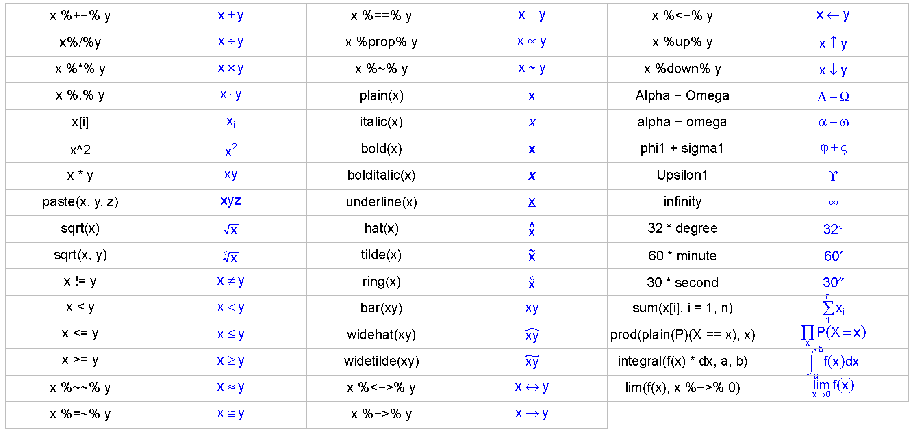

第4章 拟合
你大可以边用边学啊！需要用到的先学，其它的就放一边，只要能善用一些常用到的功能，又何必要那么深入呢？而且您在使用当中经常会发现一些新功能，这又会马上让您给赚到了。—《大家来学VIM》
我们在Excel里经常需要对散点图做线性或非线性拟合，添加个趋势线，在图上显示个拟合公式。这个操作用R可以很轻松地完成，而且能输出更多有用有趣的结果。
4.1 线性拟合：散点图的趋势线
我们进行线性拟合示例所用的数据，是R自带的世界电话数据WorldPhones。我们先准备一下数据，把WorldPhones保存为一个数据框，并增加一列年代数据。
wp <- as.data.frame(WorldPhones)
wp$year <- as.numeric(rownames(wp))下面，我们看看亚洲跟欧洲的电话数量有没有线性关系。R内置的线性拟合函数是lm()，用起来很简单：
m <- lm(wp$Asia ~ wp$Europe) lm()函数里参数的格式是因变量 ~ 自变量，也就是y ~ x。有时候，我们需要强制直线通过原点，只需在拟合时指定自变量加上0即可：
m0 <- lm(wp$Asia ~ wp$Europe + 0) 线性拟合的主要结果，也就是拟合直线的斜率和截距，都保存在了m这个变量里。
m # 查看模型，显示斜率和截距。##
## Call:
## lm(formula = wp$Asia ~ wp$Europe)
##
## Coefficients:
## (Intercept) wp$Europe
## -3782.5348 0.2915信息量太少了，至少得给个\(R^2\)和\(p\)值吧。好办，还记得前面见过的summary()函数吗？可以直接用到模型结果上：
msum <- summary(m)
msum # 模型的详细总结报告。##
## Call:
## lm(formula = wp$Asia ~ wp$Europe)
##
## Residuals:
## 1 2 3 4 5 6 7
## 369.3 -252.2 -464.8 177.8 -322.1 242.3 249.7
##
## Coefficients:
## Estimate Std. Error t value Pr(>|t|)
## (Intercept) -3.783e+03 7.278e+02 -5.197 0.00348 **
## wp$Europe 2.915e-01 2.081e-02 14.012 3.33e-05 ***
## ---
## Signif. codes:
## 0 '***' 0.001 '**' 0.01 '*' 0.05 '.' 0.1 ' ' 1
##
## Residual standard error: 366.7 on 5 degrees of freedom
## Multiple R-squared: 0.9752, Adjusted R-squared: 0.9702
## F-statistic: 196.3 on 1 and 5 DF, p-value: 3.33e-05这个信息就丰富多了，给出了残差的分布情况，斜率和截距的拟合值，标准差，\(t\)检验的\(t\)值、\(Pr\)值和显著性，残差的标准差，\(R^2\)，\(F\)检验的\(F\)统计量和\(p\)值等。关于\(t\)检验和\(F\)检验，详见第十七到第十九章。
| 函数 返回 | 值 |
|---|---|
summary() |
主要统计量 |
anova() |
方差分析表 |
coef(), coefficients() |
回归系数 |
confint() |
回归系数的置信区间 |
deviance() |
残差平方和 |
effects() |
正交效应向量（Vector of orthogonal effects ） |
fitted() |
拟合的Y值向量Vector of fitted y values |
residuals(), resid() |
模型残差Model residuals |
vcov() |
主参数的协防差矩阵 |
要想从模型报告中提取需要的统计量，例如拟合系数和\(R^2\)，那么运行：
msum$r.squared## [1] 0.975165msum$coefficients## Estimate Std. Error t value
## (Intercept) -3782.5348374 727.84976513 -5.196862
## wp$Europe 0.2915207 0.02080546 14.011737
## Pr(>|t|)
## (Intercept) 3.476111e-03
## wp$Europe 3.329895e-05记得在$后用tab小助理看看都能提取出哪些统计量。
前文我们讲过作图函数plot()的三种化身。现在，我们介绍第四种化身。先请example()小助理调出lm()函数的示例来看看：
example(lm)example()函数实际运行的是F1帮助信息里是示例代码，这些代码在RStudio的左下面板逐个显示。仔细观察这些代码，可以发现，拟合结果图是用plot()函数直接画出来的。是的，这就是plot()的第四种化身：当作图对象是个拟合模型时，plot() 函数作出了四张模型诊断图。
下面我们把我们自己的拟合结果画出来。由于共有4张图，我们用上一章学到的作图布局方法，把四张图拼在一起：
par(mfrow = c(2, 2), mar = c(4, 4.2, 2, 1))
plot(m)图 4.1: plot()函数展示线性拟合模型的结果.
plot()再次展示了强大的威力。这四张图里，第一张是以拟合值为横坐标、残差为纵坐标的对比图，用来展示残差是否均匀分布在直线\(y=0\)两侧；第二张是残差Q-Q图，用来展示残差是否符合正态分布：第三张是以拟合值为横坐标、标准残差平方根为纵坐标的对比图，仍然是用来展示残差分布状况的；第四张是以杠杆值为横坐标、标准残差为纵坐标的对比图，展示影响回归结果的异常点。
做统计，R确实比Excel不知高到哪儿去了。只是，信息量有点大，术语有点多。不懂或者忘了的话，不要忘了你的三大法宝。
4.2 在绘图区添加数学表达式
在展示线性拟合结果时，我们往往只需做个xy散点图，添加趋势线和回归方程就够了。对于散点图和趋势线，我们可以按照前文所学的绘图指令来完成。
plot(x = wp$Europe, y = wp$Asia, pch = 19)
abline(m, col = "blue")
legend("bottomright", pch = c(19, NA), lty = c(NA, 1),
legend = c("Data", "Linear fit"),
col = c("black", "blue"), bty = 'n')图 4.2: 给散点图添加趋势线和拟合方程.
abline()函数设定参数a和b，那么拟合直线是怎么作出来的？
对于添加回归方程，我们先了解一下如何在绘图区内添加文字。
绘图区添加文字，一般用text()函数。它跟legend()函数的用法很像。比如，我们在图的左上角(23000, 8500)这个坐标位置添加文本“(a)”，颜色为红色。
text(x = 23000, y = 8500, labels = '(a)', col = 'red')除了使用指定的坐标位置外，跟legend()一样，放置文字的位置也可以locate()函数以鼠标点击的方式来确定。请自己试一下吧。
legend()跟text()有很多相似之处，那么，什么情况下他们两个的用处完全相同？
下一步，我们将回归方程以添加文本的方式添加到图上。从拟合结果里，可以找到拟合直线的斜率是0.2915，截距是3783。那么，方程可以写成一个字符串，然后用text()函数把这个字符串添进去：
eqlm1 <- 'y = 0.2915x + 3783'
text(x = 23000, y = 7000, labels = eqlm1, adj = 0)要求不高的话，这就算是把公式添进图里了。
当然，严格来讲，这个表达式里的x和y应该用斜体来表示。这个需求是字符串满足不了的，我们需要用表达式函数expression()生成一个表达式：
eqlm2 <- expression(y == 0.2915 * x + 3783)
text(x = 23000, y = 6000, labels = eqlm2, adj = 0)注意，在表达式里，乘号不能省略，而等号要用双等号表示。
eqlm2跟eqlm1在图上貌似没差别呀？别急，还没完。在expression()函数里，可以增添需要的格式，例如斜体，用italic()函数：
eqlm3 <- expression(italic(y) == 0.2915 * italic(x) + 3783)
text(x = 23000, y = 5000, labels = eqlm3, adj = 0)这回有区别了吧？
如果你觉得区别不明显，下面我们来添加\(R^2\)值到图里：
eqr2 <- expression(italic(R) ^ 2 == 0.9752)
text(x = 23000, y = 4000, labels = eqr2, adj = 0)^符号是个格式标记，expression()函数看到这个标记之后，就知道后面紧跟的是上标了。如果没有expression()函数，仅凭字符串是很难得到上标符号的。
expression()函数生成的表达式变量，不仅可以用在text()里作为文字插入绘图区，还可以用在legend()函数里插进图例，用在mtext()函数放在坐标轴外，用在plot()的xlab或ylab参数上作为坐标轴标签（见第3.5节）。
expression()函数提供了一个强大的数学环境，允许插入任何复杂的数学符号。例如，我们添加一个开平方表达式：
txt1 <- expression(sqrt(x))然后， 我们用legend()函数，将txt1添加到图例里（当然，图中并没有这条开平方曲线，这里仅仅作为练习）。
legend('topright', legend = txt1)可见，expression()函数把sqrt符号自动转换成了开方符号。我们为上面这个图例增加线型，去除边框：
legend('right', legend = txt1, lty = 1, col = 'blue',
bty = 'n')
下面, 我们再插入一个积分符号，用integral()函数：
txt2 <- expression(integral(f(x) * dx, a, b))
legend('topleft', legend = txt2, col = 'blue', bty = 'n')常见的数学符号，见小贴士4.2。
4.3 非线性拟合：一个指数递减模型
实验观测到一组\(x\)值和\(y\)值，假定\(y\)与\(x\)的响应关系用一个非线性方程来表达，那么一般可以使用nls()函数来得到方程的系数。nls就是Non-Linear Simulation（非线性模拟）的缩写。
下面举个例子。为了描述方便，我们随机生成一组数据：
x <- seq(0, 50, 1)
y <- runif(1, 5, 15) * exp(-runif(1, 0.01, 0.05) * x) +
rnorm(51, 0, 0.5)假定上面这组数据是我们实验观测得到的，并且假定我们已知二者之间的关系可以用下面这个方程来描述：
\[ y = a e^ {–b x}\]
我们作图看看他们的关系：
plot(x,y)图 4.3: 用作非线性拟合的散点图示例.
从两者响应的方程和图来估计，\(a\)是当\(x=0\)时的y值，约为8；当\(x\) 约为50时，\(y\)约为1，那么根据对a的估计，我们可以来估计\(b \approx - \log(\frac{1}{a}) / 50\)，并以此估计值作为\(a\)和\(b\)的初始值，来拟合得到精确值。
a_start <- 8
b_start <- - log(1/a_start) / 50
m <- nls(y ~ a * exp(-b * x),
start = list(a = a_start, b = b_start))
m## Nonlinear regression model
## model: y ~ a * exp(-b * x)
## data: parent.frame()
## a b
## 8.04087 0.04253
## residual sum-of-squares: 10.3
##
## Number of iterations to convergence: 3
## Achieved convergence tolerance: 1.437e-06可见，\(a\)的拟合值为8.04，\(b\)的拟合值为0.0425。拟合曲线的预测值跟实测值的相关系数为
cor(y,predict(m))## [1] 0.9758937要想查看总的拟合报告，我们再度使用人见人爱的summary()函数:
summary(m)##
## Formula: y ~ a * exp(-b * x)
##
## Parameters:
## Estimate Std. Error t value Pr(>|t|)
## a 8.040872 0.190289 42.26 <2e-16 ***
## b 0.042525 0.001612 26.37 <2e-16 ***
## ---
## Signif. codes:
## 0 '***' 0.001 '**' 0.01 '*' 0.05 '.' 0.1 ' ' 1
##
## Residual standard error: 0.4584 on 49 degrees of freedom
##
## Number of iterations to convergence: 3
## Achieved convergence tolerance: 1.437e-06显示结果的格式跟前面的线性拟合是类似的。
4.4 课外活动：助理团与自助餐
求人之前先求己，人助之前先自助。我们在第3章介绍了R的人气助理团，并且频繁提醒你使用他们。相信你现在对F1、example()和demo()已经从陌生到熟悉了吧？只要再进一步，深入了解一下他们的工作方式，我们就能学到更多有价值的东西。
例如，我们先敲个函数名lm()，再将光标移到lm函数名的任意位置按F1，RStudio右下面板就弹出了lm()的完整帮助信息。注意看其中的最后一部分Examples。
同时，我们请example()小助理调出线性拟合函数lm()的示例:
example(lm)RStudio左下面板会提示你按回车键，每按一次就多显示一些示例。左右面板对比一下，你就会惊喜地发现，左下面板的黑色代码和右下面板帮助信息的Examples部分，是一模一样的！左下面板只是多显示了运行结果而已。所以只要把帮助信息里的代码拷贝粘贴到代码窗口运行，跟example()函数运行的结果是一样的。
example()小助理顿时哭了：主人，这秘密都被你发现了……以后你是不是只要F1不要我了……
其实example()比按F1再拷贝粘贴还是方便很多了。当然，这个因人而异，你喜欢哪个就用哪个好了。
下面一个要哭的是demo()：
demo(plotmath)这里，demo()将表达式函数里的数学符号在RSudio右下面板的作图区展示出来。那么这些图是怎么作出来的？只要详细研究一下demo()运行后在左下面板出现的代码就知道了。
事实上，小贴士4.2就是从中摘录绘制而成的。
demo(plotmath)演示的代码，从中挑出你常用的数学符号，可以自制自己专属的小贴士备忘录。想想该如何制作。
好了，现在你可以用example()和demo()试试别的函数，从中偷学一些绝技了。
关于F1、example()、demo()和vignette()这些助理更多的背景和秘密，我们将在第9.4节进一步深挖。
学习R语言，不愁没资料，不愁身边没人帮忙。F1，F2，example，demo，vignette，stackoverflow，google，这是一桌丰盛的自助餐。根本不用讨饭吃，好吃的都摆在你眼前，就看你愿不愿动筷子夹到自己碗里。